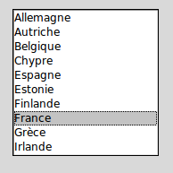

Un widget ListBox - liste de sélection - sert à présenter une liste de lignes de textes dans un cadre. Généralement, il s’agit de permettre à l’utilisateur de sélectionner une ou plusieurs lignes dans la liste. Toutes les lignes utilisent la même police de caractère. Si vous avez besoin de quelquechose qui ressemble plus à un éditeur de texte, reportez vous à Text - Éditeurs de texte.
Pour créer un widget Listbox à l’intérieur d’une fenêtre mère ou d’un cadre désigné par parent:
Ce constructeur retourne la nouvelle liste de sélection créée. Ses options incluent:
| Paramètres: |
|
|---|
Les méthodes des listes de sélection utilisent fréquement des index:
Les méthodes des listes de sélection incluent:
Sélectionne la ligne ayant l’index indiqué.
Retourne la boîte englobante - bounding box - de la ligne ayant l’index indiqué sous la forme d’un tuple à 4 éléments (x, y, largeur, hauteur), où le pixel le plus en haut et à gauche de cette ligne est situé en (x,y) et la largeur et hauteur sont données en pixels. La largeur correspond à la partie de la ligne qui contient le texte.
Si la ligne de numéro index n’est pas visible, cette méthode retourne None. Si elle est partiellement visible, la boîte englobante peut excéder la zone visible.
Retourne un tuple qui contient les numéros ou index de la ou des lignes sélectionnées, en comptant à partir de 0. Si aucune ligne n’est sélectionnée, le tuple est vide.
Supprime les lignes dont les indices sont dans l’intervalle [debut, fin] (extrémités incluses). Si le deuxième argument est omis, seule la ligne d’index debut est supprimée.
Retourne un tuple qui contient les textes des lignes dont les indices appartiennent à l’intervalle [deb, fin]. Si le deuxième argument est omis, seul le texte de la ligne d’indice debut est retourné.
Si c’est possible, positionne la partie visible de la liste de sélection de telle sorte qui la ligne numéro i soit tout en haut de la liste.
Insert une ou plusieurs lignes (autant que d’éléments fournis après le premier argument) dans la liste avant la ligne de numéro index. Utiliser 'end' comme premier argument si vous souhaitez ajouter de nouvelles lignes à la fin de la liste.
Retourne l’une des valeurs d’option de la ligne de numéro index de la liste. Pour les options possibles, voir la méthode itemconfig() ci-dessous. Si l’option donnée n’a pas été configurée pour la ligne indiquée, la valeur de retour est une chaîne vide.
Modifie une ou des options de configuration de la ligne de numéro index. Les options incluent:
| Paramètres: |
|
|---|
Retourne l’index de la ligne visible la plus proche du niveau y (vertical) exprimé en pixels relativement au bord supérieur du widget.
Voir la méthode scan_mark() ci-dessous.
Utilisez cette méthode pour implémenter le défilement rapide de la liste de sélection à la souris. Pour réaliser cette fonctionnalité, lier un événement «appui sur l’un des boutons de la souris» à un gestionnaire qui se chargera d’appeler la méthode scan_mark() à la position courante de la souris. Ensuite, lier l’événement «déplacement de la souris» (Motion) à un gestionnaire qui appelera scan_dragto() avec la position courante de la souris. La liste de sélection défilera alors à un rythme proportionnel à la distance qui sépare la position enregisrée par scan_mark et la position courante.
Ajuste la position de la liste de sélection de telle sorte que la ligne de numéro index soit visible.
Positionne l’«ancre de sélection» sur la ligne de numéro index. Une fois que cette ancre a été positionnée, vous pouvez y faire référence en utilisant l’index spécial 'anchor'.
Par exemple, si votre liste est lbox, ces instructions sélectionnerons les lignes 3, 4 et 5:
lbox.selection_anchor(3)
lbox.selection_set(tk.ANCHOR,5)
Déselectionne toutes les lignes dont les index appartiennent à l’intervalle [debut, fin]. Si le second argument est omis, seule la ligne de numéro debut est déselectionnée.
Retourne 1 si la ligne d’index donné est sélectionnée et retourne 0 autrement.
Sélectionne toute les lignes dont les index appartiennent à l’intervalle [debut, fin]. Si le deuxième argument est omis, seule la ligne d’index debut est sélectionnée.
Retourne le nombre de lignes de la liste de sélection.
Pour faire défiler la liste horizontalement, configurez l’option command du widget barre de défilement horizontale avec cette méthode. Voir Défilement d’une liste de sélection.
Fait défiler la liste de sélection horizontalement de telle sorte que le côté gauche de la fraction de sa ligne la plus longue soit placé contre le bord gauche de la zone visible. L’argument fraction appartient à l’intervalle [0,1].
Fait défiler la liste de sélection horizontalement. Pour l’argument quoi, utiliser soit 'units' pour un défilement d’unité «un caractère», ou 'pages' pour un défilement où l’unité est la «largeur effective de la liste de sélection». L’argument nombre indique le nombre d’unités du défilement: les valeurs négatives font défiler vers la droite, les positives vers la gauche.
Similaire à la méthode xview(), mais pour un défilement vertical.
Similaire à la méthode xview_moveto() pour un défilement vertical.
Similaire à la méthode xview_scroll() mais pour un défilement vertical. 'units' se réfère à l’unité «ligne» et 'pages' à l’unité «hauteur visible de la liste».
Voici un fragment de code qui illustre la création et la liaison d’une liste de sélection avec des barres de défilement verticale et horizontale:
yDefilB = Scrollbar(root, orient='vertical')
yDefilB.grid(row=0, column=1, sticky='ns')
xDefilB = Scrollbar(root, orient='horizontal')
xDefilB.grid(row=1, column=0, sticky='ew')
listSel = Listbox(root,
xscrollcommand=xDefilB.set,
yscrollcommand=yDefilB.set)
listSel.grid(row=0, column=0, sticky='nsew')
xDefilB['command'] = listSel.xview
yDefilB['command'] = listSel.yview